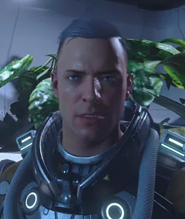

BIOGRAFIE: Aaron Price
Bio von Aaron Price

Aaron Price
Geburtsdatum: 15. Oktober 2913
Alter: 38
Geburtsort: Microtech, Stanton System
UEE Status: Citizen
Dienstzeit: Unehrenhaft entlassen
Haarfarbe: Grau
Augenfarbe: Blau
Größe: 183 Zentimeter
Gewicht: 84 Kilogramm
Aktueller Wohnort: MIC L1 / Stanton System
Hobbys: Lesen, das Sammeln von seltenen Teesorten
(schlechte) Angewohnheiten: Es gibt für ihn kein scheitern, er reagiert auf fehlschlagen einer Mission mit Wutausbrüche und Unverständnis
(gute) Angewohnheiten: Er ist schnell wieder einsichtig, entschuldigt sich für seine Wutausbrüche und bespricht gerne seine Fehler
Persönlichkeit: Aaron sieht es gerne wenn alle in seinem Umfeld zufrieden und glücklich sind, hat ein Gespür dafür wenn was in der Luft liegt. Er mag es nicht wenn hinter seinem Rücken über ihn geredet wird, er mag es gerne wenn der oder die jenige, die mit ihm ein Problem hat, es ihm ehrlich und ins gesicht sagt, denn nur so kann er an sich arbeiten und wenn es gerechtfertigt ist, sich auch ändern. Zum wohle der Gemeinschaft stellt er auch seine eigenen Bedürfnisse gerne in den Hintergrund und freut sich über jede Kleinigkeit. Er genießt es regelrecht auf Schiffen das Kommando zu haben und hat in brenzlichen situationen immer einen Plan B in der Hand. Freizeitgestaltung: Das mischen und ausprobieren von seltenen Teesorten und diese in einem Buch eintragen.
Seine Leidenschaft: Er liebt gut geführte Schiffe und eine Tasse heißen Tee.....
Seine Schwächen : In seiner Vergangenheit im Militärdienst ist ihm ein volgend schwerer Fehler unterlaufen, was zum Tode seines besten Freundes führte. Ab diesem Zeitpunkt fällt es Aaron sehr schwer eine Waffe zu zücken und sich zu verteidigen. Er ist gerade in Sachen Bodenkampf nicht der beste und lässt anderen gerne den vortritt.
Er liebt : Ehrlichkeit, Aufrichtigkeit, Gerechtigkeit und sucht immer das Gespräch...
Er hasst : Verschwiegenheit, Tuscheln, Lästern, keine Antworten...
Gute Eigenschaften: Er hat immer ein offenes Ohr für alle !!!
Hier noch eine kleine Einführung wie Aaron Price zur ARISCORP gekommen ist:
Geburtsdatum: 15. Oktober 2913
Alter: 38
Geburtsort: Microtech, Stanton System
UEE Status: Citizen
Dienstzeit: Unehrenhaft entlassen
Haarfarbe: Grau
Augenfarbe: Blau
Größe: 183 Zentimeter
Gewicht: 84 Kilogramm
Aktueller Wohnort: MIC L1 / Stanton System
Hobbys: Lesen, das Sammeln von seltenen Teesorten
(schlechte) Angewohnheiten: Es gibt für ihn kein scheitern, er reagiert auf fehlschlagen einer Mission mit Wutausbrüche und Unverständnis
(gute) Angewohnheiten: Er ist schnell wieder einsichtig, entschuldigt sich für seine Wutausbrüche und bespricht gerne seine Fehler
Persönlichkeit: Aaron sieht es gerne wenn alle in seinem Umfeld zufrieden und glücklich sind, hat ein Gespür dafür wenn was in der Luft liegt. Er mag es nicht wenn hinter seinem Rücken über ihn geredet wird, er mag es gerne wenn der oder die jenige, die mit ihm ein Problem hat, es ihm ehrlich und ins gesicht sagt, denn nur so kann er an sich arbeiten und wenn es gerechtfertigt ist, sich auch ändern. Zum wohle der Gemeinschaft stellt er auch seine eigenen Bedürfnisse gerne in den Hintergrund und freut sich über jede Kleinigkeit. Er genießt es regelrecht auf Schiffen das Kommando zu haben und hat in brenzlichen situationen immer einen Plan B in der Hand. Freizeitgestaltung: Das mischen und ausprobieren von seltenen Teesorten und diese in einem Buch eintragen.
Seine Leidenschaft: Er liebt gut geführte Schiffe und eine Tasse heißen Tee.....
Seine Schwächen : In seiner Vergangenheit im Militärdienst ist ihm ein volgend schwerer Fehler unterlaufen, was zum Tode seines besten Freundes führte. Ab diesem Zeitpunkt fällt es Aaron sehr schwer eine Waffe zu zücken und sich zu verteidigen. Er ist gerade in Sachen Bodenkampf nicht der beste und lässt anderen gerne den vortritt.
Er liebt : Ehrlichkeit, Aufrichtigkeit, Gerechtigkeit und sucht immer das Gespräch...
Er hasst : Verschwiegenheit, Tuscheln, Lästern, keine Antworten...
Gute Eigenschaften: Er hat immer ein offenes Ohr für alle !!!
Aaron Price ist ein junger Citizen der schon als kleiner Junge immer nach oben zu den Sternen geschaut hat und sich immer jeden Abend die Frage gestellt hat, was ist wohl noch alles da oben ? was erwartet mich dort ?
Als er endlich alt genug war und im Alter von 38 Jahren endlich sein Heimatplanet Microtech verlassen konnte war er überwältigt von den schier endlosen Weiten und Möglichkeiten die vor ihm lagen.
Nach einiger Zeit in der ARISCORP fühlte sich Aaron Price wie zu Hause, er hätte es sich nie träumen lassen das er in diesem weiten Verse, wo er als kleines Kind immer hinauf geschaut hatte, eine zweite Familie gefunden hatte.
[ARISCORP] Aaron Price.
Das Abendteuer wartet